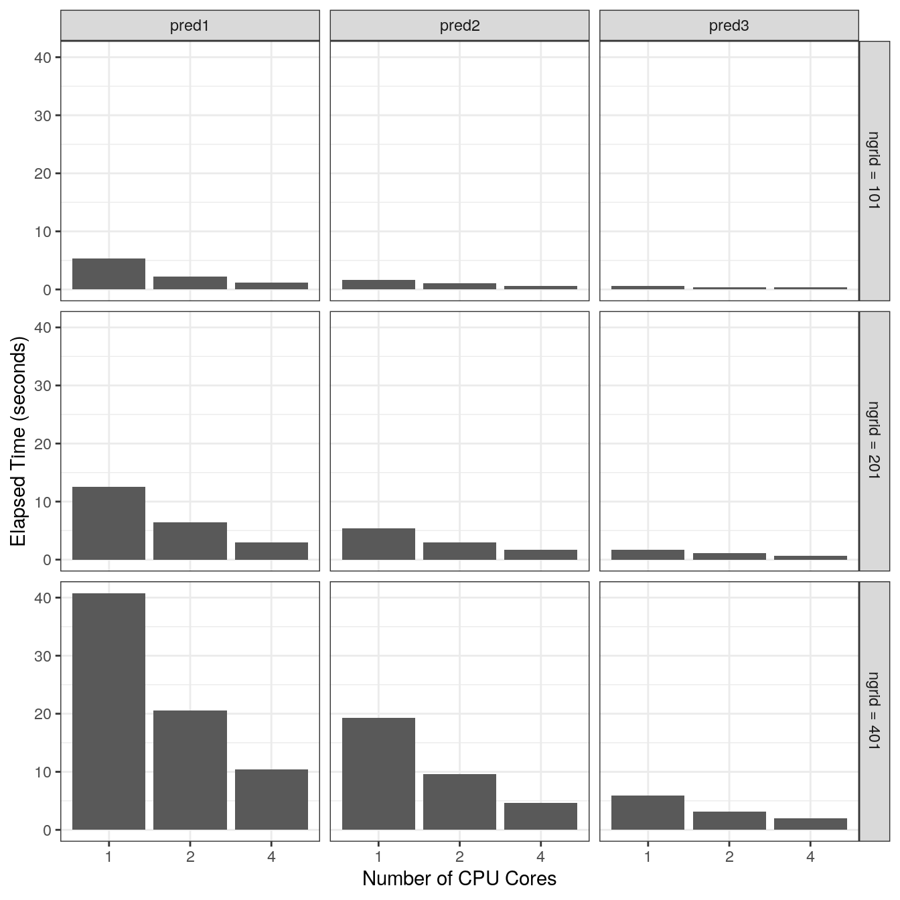

The step I of the PETLER algorithm involves calculating the mean density function and covariance functions from large unlabeled data. To accelerate this calculation, we have implemented a fast and memory-efficient approach via multicore parallel computing.
library(PETLER) ## Loading required package: survival
TrainCode <- data_org$TrainCode TrainCode[, monthstd := month / fu_time] # standardized time (range: 0-1) TrainCode ## id fu_time month pred1 pred2 pred3 monthstd ## 1: 1 49.41273 0 0 0 0 0.0000000 ## 2: 1 49.41273 1 0 0 0 0.0202377 ## 3: 1 49.41273 2 0 0 0 0.0404754 ## 4: 1 49.41273 3 0 0 0 0.0607131 ## 5: 1 49.41273 4 0 0 0 0.0809508 ## --- ## 810620: 20600 24.70637 20 0 0 0 0.8095080 ## 810621: 20600 24.70637 21 0 0 0 0.8499834 ## 810622: 20600 24.70637 22 0 0 0 0.8904588 ## 810623: 20600 24.70637 23 0 0 1 0.9309342 ## 810624: 20600 24.70637 24 0 0 2 0.9714096
In the demo, the TrainCode data is used in the FPCA step and it contains longitudinal encounter records for 20,600 patients (20,000 unlabeled & 600 labeled).
# non-zero NZ <- TrainCode[, 4:6] != 0 nz.pct <- round(colMeans(NZ) * 100) data.frame(nz = colSums(NZ), nz.pct = paste0(nz.pct, "%")) ## nz nz.pct ## pred1 72917 9% ## pred2 57210 7% ## pred3 13896 2%
The figure below shows the elapsed time (in seconds) for three event codes under different settings. Even for ngrid = 401, the elapsed time is less than one minute for each setting. The linear scalability allows the PETLER algorithm to be feasible even in studies with very large unlabeled data.
